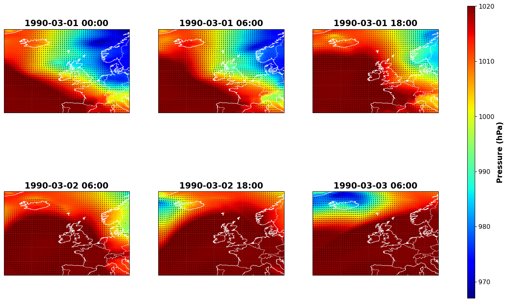
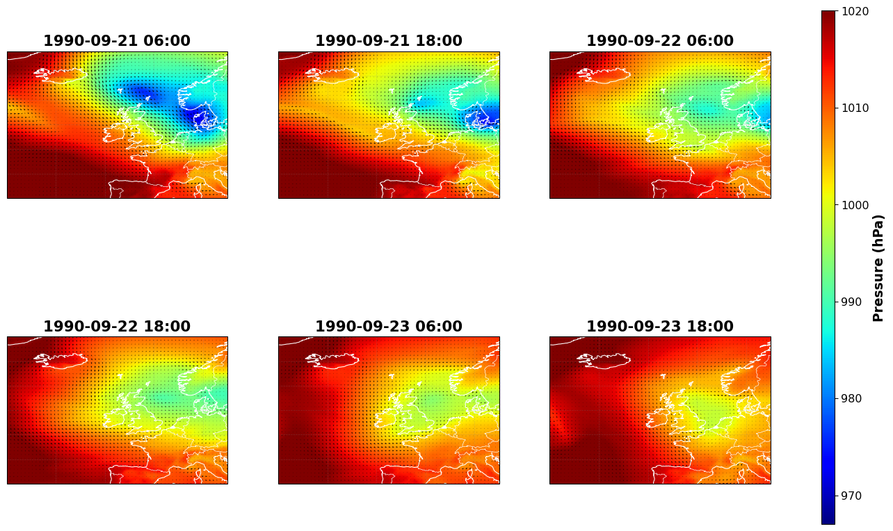

Shared utilities and configuration loadedEastern Scheldt Barrier
Overview
This document provides a complete analysis workflow for the Eastern Scheldt barrier system, combining barrier closure analysis, tide gauge data processing, tidal analysis, and visualization. The analysis covers the period from 1986 to 2024 and includes:
- Barrier Closure Analysis: Loading and analyzing past barrier closure dates, counting closures per water year, and calculating statistics
- Tide Gauge Data Processing: Loading and combining tide gauge data from multiple sources (OS4 and RPBU gauges)
- Tidal Analysis: Performing harmonic tidal decomposition and generating predicted astronomical tides
- Visualization: Creating comprehensive visualizations showing predicted high waters, observed water levels, and barrier closures
Water years run from July 1 to June 30, which is more appropriate for coastal flood analysis than calendar years.
Barrier Closures
This section analyzes past closures of the Eastern Scheldt barrier. The analysis:
- Loads barrier closure dates from an Excel file
- Counts closures per water year (July 1 to July 1)
- Calculates statistics (min, mean, max, total closures)
- Creates a bar chart visualization
Analysis configuration:
Water years: 1986/87 to 2024/25 (39 years)Analysis
Loaded 31 closure datetimes
First closure: 1986-10-20 00:00:00
Last closure: 2023-12-21 00:00:00
Closures per water year calculated for 39 years
Total closures: 31
Closure statistics:
Min per year: 0.0
Mean per year: 0.79
Max per year: 4.0
Total: 31
Data saved to output/mast1.pklVisualization
This bar chart shows the number of barrier closures per water year from 1986/87 to 2024/25. The Eastern Scheldt barrier closes when water levels exceed a threshold, typically during storm surge events.

Figure saved to output/master1_closures.png<Figure size 672x480 with 0 Axes>The following table lists all barrier closure dates, which correspond to storm events that triggered the Eastern Scheldt barrier.
Total number of closures: 31| Closure date | Closure Date | Water Year | Year | Month | |
|---|---|---|---|---|---|
| Closure | |||||
| 0 | 1 | 1986-10-20 00:00 | 1986/87 | 1986 | October |
| 1 | 2 | 1986-12-19 00:00 | 1986/87 | 1986 | December |
| 2 | 2 | 1986-12-19 00:00 | 1986/87 | 1986 | December |
| 3 | 3 | 1989-02-14 05:40 | 1988/89 | 1989 | February |
| 4 | 4 | 1990-02-27 23:10 | 1989/90 | 1990 | February |
| 5 | 4 | 1990-02-27 13:50 | 1989/90 | 1990 | February |
| 6 | 4 | 1990-02-28 23:40 | 1989/90 | 1990 | February |
| 7 | 5 | 1990-03-01 00:10 | 1989/90 | 1990 | March |
| 8 | 6 | 1990-09-21 12:00 | 1990/91 | 1990 | September |
| 9 | 7 | 1990-12-12 05:40 | 1990/91 | 1990 | December |
| 10 | 7 | 1990-12-12 20:10 | 1990/91 | 1990 | December |
| 11 | 8 | 1992-11-11 13:40 | 1992/93 | 1992 | November |
| 12 | 9 | 1993-01-25 15:30 | 1992/93 | 1993 | January |
| 13 | 10 | 1993-02-21 08:40 | 1992/93 | 1993 | February |
| 14 | 11 | 1993-11-14 11:10 | 1993/94 | 1993 | November |
| 15 | 11 | 1993-11-15 00:40 | 1993/94 | 1993 | November |
| 16 | 12 | 1994-01-28 10:40 | 1993/94 | 1994 | January |
| 17 | 13 | 1995-01-02 21:40 | 1994/95 | 1995 | January |
| 18 | 13 | 1995-01-02 14:20 | 1994/95 | 1995 | January |
| 19 | 14 | 1996-10-29 11:40 | 1996/97 | 1996 | October |
| 20 | 15 | 2002-10-27 14:30 | 2002/03 | 2002 | October |
| 21 | 16 | 2003-12-21 08:30 | 2003/04 | 2003 | December |
| 22 | 17 | 2004-02-08 13:20 | 2003/04 | 2004 | February |
| 23 | 18 | 2007-11-09 22:40 | 2007/08 | 2007 | November |
| 24 | 19 | 2013-12-05 22:50 | 2013/14 | 2013 | December |
| 25 | 20 | 2014-10-21 22:30 | 2014/15 | 2014 | October |
| 26 | 21 | 2018-01-03 12:10 | 2017/18 | 2018 | January |
| 27 | 22 | 2020-02-10 11:09 | 2019/20 | 2020 | February |
| 28 | 23 | 2022-01-31 10:23 | 2021/22 | 2022 | January |
| 29 | 24 | 2022-02-21 04:46 | 2021/22 | 2022 | February |
| 30 | 25 | 2023-12-21 00:00 | 2023/24 | 2023 | December |
Tidal Harmonic Analysis
This section performs comprehensive tidal harmonic analysis on tide gauge data from the Eastern Scheldt, including data processing, harmonic decomposition, and visualization. The analysis:
- Loads and processes raw tide gauge data from multiple sources (OS4 and RPBU gauges)
- Performs harmonic tidal decomposition using
pytides - Generates tidal predictions for all years
- Compares observed water levels with predicted astronomical tides
- Visualizes predicted high waters and barrier closures
The predicted tides represent only the astronomical component, while observed water levels include both tides and meteorological effects (storm surges, wind setup, etc.).
Tide Gauge Data Processing
This section loads and processes raw tide gauge data from the Eastern Scheldt. The analysis:
- Loads data from multiple tide gauge files (RPBU and OS4 gauges)
- Cleans data by removing invalid values
- Combines time series from different gauges to create a continuous record
- Creates a visualization of the complete water level time series
The combined time series spans from 1986 to 2023, using OS4 gauge data for the early period (1986-1987) and RPBU gauge data for the main period (1987-2023).
Data directory: ../2_DATA
Output directory: outputLoad RPBU 1987-2022 Data
Load the main tide gauge dataset from the RPBU gauge covering April 1987 to December 2022.
Loaded RPBU 1987-2022: 1,878,480 data points
Start: 1987-04-15 00:00:00
End: 2022-12-31 23:50:00
Valid data: 1,876,721 points (99.9%)Load RPBU 2023 Data
Load the 2023 data from the RPBU gauge to extend the time series.
Loaded RPBU 2023: 52,560 data points
Start: 2023-01-01 00:00:00
End: 2023-12-31 23:50:00
Valid data: 52,560 points (100.0%)Load OS4 1982-2023 Data
Load data from the OS4 gauge, which provides coverage for the early period before RPBU data begins.
Loaded OS4 1982-2023: 2,208,960 data points
Start: 1982-01-01 00:00:00
End: 2023-12-31 23:50:00
Valid data: 2,161,485 points (97.9%)Combine Time Series
Combine the time series from different gauges to create a continuous record. Use OS4 data for the early period (1986-1987) before RPBU starts, then switch to RPBU data for the main period.
Combined time series: 1,998,576 data points
Start: 1986-01-01 00:00:00
End: 2023-12-31 23:50:00
Valid data: 1,996,699 points (99.9%)
Time span: 13878 daysSave the combined time series to a pickle file for use in subsequent analyses.
Data saved to output/mast2.pklVisualization
This figure shows the combined tide gauge water level time series from 1986 to 2023 at 10-minute intervals. The data combines OS4 gauge measurements (1986-1987) and RPBU gauge measurements (1987-2023) for the Eastern Scheldt. Water levels are shown in meters relative to NAP (Normal Amsterdam Peil, the Dutch reference datum). The time series shows tidal variations, storm surges, and long-term water level patterns over the 38-year period.

Figure saved to output/master2_tide_gauge.png<Figure size 672x480 with 0 Axes>Tidal Analysis
This section performs harmonic tidal analysis on tide gauge data from the Eastern Scheldt. The analysis:
- Calculates data quality for each year (1986-2023)
- Performs harmonic tidal decomposition using
pytides(replacing MATLAB’st_tide) - Generates tidal predictions for all years
- Compares observed water levels with predicted astronomical tides
The predicted tides represent only the astronomical component, while observed water levels include both tides and meteorological effects (storm surges, wind setup, etc.).
Setup and Configuration
Analysis configuration:
Years: 1986 to 2023 (38 years)
Data quality threshold: 60%
Latitude: 51.64°Load Tide Gauge Data
Loading tide gauge data...
Loaded 1,998,576 data points
Start: 1986-01-01 00:00:00
End: 2023-12-31 23:50:00
Valid data: 1,996,699 points (99.9%)Calculate Data Quality Per Year
Calculating data quality per year...
Data quality summary:
Range: 98.8% to 100.0%
Mean: 99.9%
Years with quality >= 60%: 38/38Tidal Analysis and Prediction
For each target year, the analysis determines a reference year, extracts data, performs harmonic decomposition, and generates predictions.
Loading existing tidal analysis results...
Loaded existing results:
Total predictions: 1,998,576 points
Start: 1986-01-01 00:00:00
End: 2023-12-31 23:50:00Data saved to output/mast3.pklVisualization
This figure compares observed water levels (blue) with predicted astronomical tides (red) from harmonic analysis. The predicted tides represent the astronomical component only, while observed water levels include both tides and meteorological effects.

Figure saved to output/master3_tidal_analysis.png<Figure size 672x480 with 0 Axes>Predicted High Waters and Barrier Closures
This section plots time-series of predicted high waters and barrier closures for the Eastern Scheldt. The analysis:
- Loads barrier closure dates and tide gauge data from previous analyses
- Creates a visualization showing:
- Barrier closure dates as vertical dashed lines
- Predicted astronomical tides (TIP)
- Observed water levels (WLP)
- The difference between observed and predicted levels (surge component)
This visualization helps identify when barrier closures occurred relative to predicted high waters and actual water levels.
Loading data...
Data loaded:
Closure dates: 31 closures
First closure: 1986-10-20 00:00:00
Last closure: 2023-12-21 00:00:00
Time series points: 1,998,576
Predicted tides: 1,998,576
Observed water levels: 1,998,576Visualization
This figure shows predicted astronomical tides (red), observed water levels (blue), the difference between them (green), and barrier closure dates (vertical dashed magenta lines). The difference (WLP-TIP) represents the non-tidal component, primarily storm surge.

Figure saved to output/master4_predicted_high_waters.png<Figure size 672x480 with 0 Axes>Storms
Loading data...
Data loaded:
Total closure dates: 31 closures
Time series points: 1,998,576Storm 1
Water Level and Surge Analysis

Figure saved to output/high_waters_storm1_predicted_high_waters_zoomed.png<Figure size 672x480 with 0 Axes>
Figure saved to output/high_waters_storm1_water_level_surge.png<Figure size 672x480 with 0 Axes>Spatial Surge and Meteorological Maps
import imageio
from io import BytesIO
gif_dir = "output/gif_frames"
gif_file_gtsm = "output/maps_storm1_gtsm_surge.gif"
os.makedirs(os.path.dirname(gif_file_gtsm), exist_ok=True)
frames = []
vmin = -0.5
vmax = 1.0
for t_idx in t_gtsm:
fig, ax = plt.subplots(figsize=(8, 8))
scatter = ax.scatter(X_GT, Y_GT, c=SU_GT[t_idx, :], cmap='jet', s=15, vmin=vmin, vmax=vmax)
ax.set_xlim(XB_GTSM)
ax.set_ylim(YB_GTSM)
ax.set_aspect('equal')
ax.grid(True, alpha=0.3)
ax.tick_params(labelsize=12)
ax.set_title('Surge: ' + TS_GT[t_idx].strftime('%Y-%m-%d %H:%M'), fontweight='bold', fontsize=16)
ax.set_xlabel('Longitude (deg)', fontweight='bold', fontsize=14)
ax.set_ylabel('Latitude (deg)', fontweight='bold', fontsize=14)
cbar = plt.colorbar(scatter, ax=ax, orientation='vertical', fraction=0.046, pad=0.04)
cbar.set_label('Surge (m)', fontweight='bold', fontsize=12)
cbar.ax.tick_params(labelsize=10)
plt.tight_layout()
# Save to buffer and append as frame
buf = BytesIO()
fig.savefig(buf, format='png', bbox_inches='tight', dpi=100)
buf.seek(0)
img = imageio.imread(buf)
frames.append(img)
buf.close()
plt.close(fig)
# Save GIF
imageio.mimsave(gif_file_gtsm, frames, fps=1, loop=0)
print(f"GTSM surge GIF saved to {gif_file_gtsm}")/var/folders/m8/cp78hgjj6j937vhj63cdm7_c0000gn/T/ipykernel_83008/1323197270.py:32: DeprecationWarning: Starting with ImageIO v3 the behavior of this function will switch to that of iio.v3.imread. To keep the current behavior (and make this warning disappear) use `import imageio.v2 as imageio` or call `imageio.v2.imread` directly.
img = imageio.imread(buf)GTSM surge GIF saved to output/maps_storm1_gtsm_surge.gif
import imageio
from io import BytesIO
# Create output directory for GIFs (new clean folder)
gif_output_dir = os.path.join(output_dir, 'storm_era5_gifs')
os.makedirs(gif_output_dir, exist_ok=True)
gif_file_era5 = os.path.join(gif_output_dir, 'era5_meteorology_storm1.gif')
int_skip = 3
X_sub = X_MET[lon_idx[0]:lon_idx[-1]+1, lat_idx[0]:lat_idx[-1]+1]
Y_sub = Y_MET[lon_idx[0]:lon_idx[-1]+1, lat_idx[0]:lat_idx[-1]+1]
X_vec = X_MET[lon_idx[0]:lon_idx[-1]+1:int_skip, lat_idx[0]:lat_idx[-1]+1:int_skip]
Y_vec = Y_MET[lon_idx[0]:lon_idx[-1]+1:int_skip, lat_idx[0]:lat_idx[-1]+1:int_skip]
frames = []
vmin = 967
vmax = 1020
for t_idx in t_met:
fig = plt.figure(figsize=(12, 10))
ax = plt.axes(projection=ccrs.PlateCarree())
# Add coastlines and geographic features
ax.add_feature(cfeature.COASTLINE.with_scale('50m'), linewidth=0.8, color='white')
ax.add_feature(cfeature.BORDERS.with_scale('50m'), linewidth=0.5, color='white')
ax.add_feature(cfeature.LAND.with_scale('50m'), facecolor='lightgray', alpha=0.3)
# Get data for this time step
P_sub = P_MET[lon_idx[0]:lon_idx[-1]+1, lat_idx[0]:lat_idx[-1]+1, t_idx] / 100
U_vec = U_MET[lon_idx[0]:lon_idx[-1]+1:int_skip, lat_idx[0]:lat_idx[-1]+1:int_skip, t_idx]
V_vec = V_MET[lon_idx[0]:lon_idx[-1]+1:int_skip, lat_idx[0]:lat_idx[-1]+1:int_skip, t_idx]
# Plot pressure field
im = ax.pcolormesh(X_sub, Y_sub, P_sub, cmap='jet', shading='gouraud',
vmin=vmin, vmax=vmax, transform=ccrs.PlateCarree())
# Plot wind vectors
ax.quiver(X_vec, Y_vec, U_vec, V_vec, color='k', scale=1200, width=0.002,
transform=ccrs.PlateCarree())
# Formatting
ax.set_xlim(XB_MET)
ax.set_ylim(YB_MET)
ax.gridlines(draw_labels=True, linewidth=0.5, color='gray', alpha=0.5, linestyle='--')
ax.tick_params(labelsize=12)
ax.set_xlabel('Longitude (deg)', fontweight='bold', fontsize=14)
ax.set_ylabel('Latitude (deg)', fontweight='bold', fontsize=14)
ax.set_title(TS_MET[t_idx].strftime('%Y-%m-%d %H:%M'), fontweight='bold', fontsize=16)
# Add colorbar
cbar = plt.colorbar(im, ax=ax, fraction=0.046, pad=0.04, shrink=0.6)
cbar.set_label('Pressure (hPa)', fontweight='bold', fontsize=12)
cbar.ax.tick_params(labelsize=10)
plt.tight_layout()
# Save to buffer and append as frame
buf = BytesIO()
fig.savefig(buf, format='png', bbox_inches='tight', dpi=100)
buf.seek(0)
img = imageio.imread(buf)
frames.append(img)
buf.close()
plt.close(fig)
# Save GIF with fps=0.5 (duration=2.0 seconds per frame)
# Note: imageio.mimsave uses duration parameter (seconds per frame)
imageio.mimsave(gif_file_era5, frames, fps=1, loop=0)
print(f"ERA5 meteorology GIF saved to {gif_file_era5}")/opt/miniconda3/envs/objective1/lib/python3.14/site-packages/cartopy/mpl/feature_artist.py:143: UserWarning: facecolor will have no effect as it has been defined as "never".
warnings.warn('facecolor will have no effect as it has been '
/var/folders/m8/cp78hgjj6j937vhj63cdm7_c0000gn/T/ipykernel_83008/3735918726.py:62: DeprecationWarning: Starting with ImageIO v3 the behavior of this function will switch to that of iio.v3.imread. To keep the current behavior (and make this warning disappear) use `import imageio.v2 as imageio` or call `imageio.v2.imread` directly.
img = imageio.imread(buf)
/opt/miniconda3/envs/objective1/lib/python3.14/site-packages/cartopy/mpl/feature_artist.py:143: UserWarning: facecolor will have no effect as it has been defined as "never".
warnings.warn('facecolor will have no effect as it has been '
/var/folders/m8/cp78hgjj6j937vhj63cdm7_c0000gn/T/ipykernel_83008/3735918726.py:62: DeprecationWarning: Starting with ImageIO v3 the behavior of this function will switch to that of iio.v3.imread. To keep the current behavior (and make this warning disappear) use `import imageio.v2 as imageio` or call `imageio.v2.imread` directly.
img = imageio.imread(buf)
/opt/miniconda3/envs/objective1/lib/python3.14/site-packages/cartopy/mpl/feature_artist.py:143: UserWarning: facecolor will have no effect as it has been defined as "never".
warnings.warn('facecolor will have no effect as it has been '
/var/folders/m8/cp78hgjj6j937vhj63cdm7_c0000gn/T/ipykernel_83008/3735918726.py:62: DeprecationWarning: Starting with ImageIO v3 the behavior of this function will switch to that of iio.v3.imread. To keep the current behavior (and make this warning disappear) use `import imageio.v2 as imageio` or call `imageio.v2.imread` directly.
img = imageio.imread(buf)
/opt/miniconda3/envs/objective1/lib/python3.14/site-packages/cartopy/mpl/feature_artist.py:143: UserWarning: facecolor will have no effect as it has been defined as "never".
warnings.warn('facecolor will have no effect as it has been '
/var/folders/m8/cp78hgjj6j937vhj63cdm7_c0000gn/T/ipykernel_83008/3735918726.py:62: DeprecationWarning: Starting with ImageIO v3 the behavior of this function will switch to that of iio.v3.imread. To keep the current behavior (and make this warning disappear) use `import imageio.v2 as imageio` or call `imageio.v2.imread` directly.
img = imageio.imread(buf)
/opt/miniconda3/envs/objective1/lib/python3.14/site-packages/cartopy/mpl/feature_artist.py:143: UserWarning: facecolor will have no effect as it has been defined as "never".
warnings.warn('facecolor will have no effect as it has been '
/var/folders/m8/cp78hgjj6j937vhj63cdm7_c0000gn/T/ipykernel_83008/3735918726.py:62: DeprecationWarning: Starting with ImageIO v3 the behavior of this function will switch to that of iio.v3.imread. To keep the current behavior (and make this warning disappear) use `import imageio.v2 as imageio` or call `imageio.v2.imread` directly.
img = imageio.imread(buf)
/opt/miniconda3/envs/objective1/lib/python3.14/site-packages/cartopy/mpl/feature_artist.py:143: UserWarning: facecolor will have no effect as it has been defined as "never".
warnings.warn('facecolor will have no effect as it has been 'ERA5 meteorology GIF saved to output/storm_era5_gifs/era5_meteorology_storm1.gif/var/folders/m8/cp78hgjj6j937vhj63cdm7_c0000gn/T/ipykernel_83008/3735918726.py:62: DeprecationWarning: Starting with ImageIO v3 the behavior of this function will switch to that of iio.v3.imread. To keep the current behavior (and make this warning disappear) use `import imageio.v2 as imageio` or call `imageio.v2.imread` directly.
img = imageio.imread(buf)
Storm 2
Water Level and Surge Analysis

Figure saved to output/high_waters_storm2_predicted_high_waters_zoomed.png<Figure size 672x480 with 0 Axes>
Figure saved to output/high_waters_storm2_water_level_surge.png<Figure size 672x480 with 0 Axes>Spatial Surge and Meteorological Maps
/var/folders/m8/cp78hgjj6j937vhj63cdm7_c0000gn/T/ipykernel_83008/3422602430.py:24: UserWarning: This figure includes Axes that are not compatible with tight_layout, so results might be incorrect.
plt.tight_layout(rect=[0, 0, 0.97, 1])
Figure saved to output/maps_storm2_gtsm_surge.png<Figure size 672x480 with 0 Axes>/opt/miniconda3/envs/objective1/lib/python3.14/site-packages/cartopy/mpl/feature_artist.py:143: UserWarning: facecolor will have no effect as it has been defined as "never".
warnings.warn('facecolor will have no effect as it has been '
/opt/miniconda3/envs/objective1/lib/python3.14/site-packages/cartopy/mpl/feature_artist.py:143: UserWarning: facecolor will have no effect as it has been defined as "never".
warnings.warn('facecolor will have no effect as it has been '
/opt/miniconda3/envs/objective1/lib/python3.14/site-packages/cartopy/mpl/feature_artist.py:143: UserWarning: facecolor will have no effect as it has been defined as "never".
warnings.warn('facecolor will have no effect as it has been '
/opt/miniconda3/envs/objective1/lib/python3.14/site-packages/cartopy/mpl/feature_artist.py:143: UserWarning: facecolor will have no effect as it has been defined as "never".
warnings.warn('facecolor will have no effect as it has been '
/opt/miniconda3/envs/objective1/lib/python3.14/site-packages/cartopy/mpl/feature_artist.py:143: UserWarning: facecolor will have no effect as it has been defined as "never".
warnings.warn('facecolor will have no effect as it has been '
/opt/miniconda3/envs/objective1/lib/python3.14/site-packages/cartopy/mpl/feature_artist.py:143: UserWarning: facecolor will have no effect as it has been defined as "never".
warnings.warn('facecolor will have no effect as it has been '
/var/folders/m8/cp78hgjj6j937vhj63cdm7_c0000gn/T/ipykernel_83008/807461205.py:42: UserWarning: This figure includes Axes that are not compatible with tight_layout, so results might be incorrect.
plt.tight_layout(rect=[0, 0, 0.97, 1])
Figure saved to output/maps_storm2_era5_meteorology.png<Figure size 672x480 with 0 Axes>Storm 3
Water Level and Surge Analysis

Figure saved to output/high_waters_storm3_predicted_high_waters_zoomed.png<Figure size 672x480 with 0 Axes>
Figure saved to output/high_waters_storm3_water_level_surge.png<Figure size 672x480 with 0 Axes>Spatial Surge and Meteorological Maps
/var/folders/m8/cp78hgjj6j937vhj63cdm7_c0000gn/T/ipykernel_83008/3367164277.py:24: UserWarning: This figure includes Axes that are not compatible with tight_layout, so results might be incorrect.
plt.tight_layout(rect=[0, 0, 0.97, 1])
Figure saved to output/maps_storm3_gtsm_surge.png<Figure size 672x480 with 0 Axes>/opt/miniconda3/envs/objective1/lib/python3.14/site-packages/cartopy/mpl/feature_artist.py:143: UserWarning: facecolor will have no effect as it has been defined as "never".
warnings.warn('facecolor will have no effect as it has been '
/opt/miniconda3/envs/objective1/lib/python3.14/site-packages/cartopy/mpl/feature_artist.py:143: UserWarning: facecolor will have no effect as it has been defined as "never".
warnings.warn('facecolor will have no effect as it has been '
/opt/miniconda3/envs/objective1/lib/python3.14/site-packages/cartopy/mpl/feature_artist.py:143: UserWarning: facecolor will have no effect as it has been defined as "never".
warnings.warn('facecolor will have no effect as it has been '
/opt/miniconda3/envs/objective1/lib/python3.14/site-packages/cartopy/mpl/feature_artist.py:143: UserWarning: facecolor will have no effect as it has been defined as "never".
warnings.warn('facecolor will have no effect as it has been '
/opt/miniconda3/envs/objective1/lib/python3.14/site-packages/cartopy/mpl/feature_artist.py:143: UserWarning: facecolor will have no effect as it has been defined as "never".
warnings.warn('facecolor will have no effect as it has been '
/opt/miniconda3/envs/objective1/lib/python3.14/site-packages/cartopy/mpl/feature_artist.py:143: UserWarning: facecolor will have no effect as it has been defined as "never".
warnings.warn('facecolor will have no effect as it has been '
/var/folders/m8/cp78hgjj6j937vhj63cdm7_c0000gn/T/ipykernel_83008/86702048.py:42: UserWarning: This figure includes Axes that are not compatible with tight_layout, so results might be incorrect.
plt.tight_layout(rect=[0, 0, 0.97, 1])
Figure saved to output/maps_storm3_era5_meteorology.png<Figure size 672x480 with 0 Axes>Storm 5
Water Level and Surge Analysis

Figure saved to output/high_waters_storm5_predicted_high_waters_zoomed.png<Figure size 672x480 with 0 Axes>
Figure saved to output/high_waters_storm5_water_level_surge.png<Figure size 672x480 with 0 Axes>Spatial Surge and Meteorological Maps
/var/folders/m8/cp78hgjj6j937vhj63cdm7_c0000gn/T/ipykernel_83008/1456226599.py:24: UserWarning: This figure includes Axes that are not compatible with tight_layout, so results might be incorrect.
plt.tight_layout(rect=[0, 0, 0.97, 1])
Figure saved to output/maps_storm5_gtsm_surge.png<Figure size 672x480 with 0 Axes>/opt/miniconda3/envs/objective1/lib/python3.14/site-packages/cartopy/mpl/feature_artist.py:143: UserWarning: facecolor will have no effect as it has been defined as "never".
warnings.warn('facecolor will have no effect as it has been '
/opt/miniconda3/envs/objective1/lib/python3.14/site-packages/cartopy/mpl/feature_artist.py:143: UserWarning: facecolor will have no effect as it has been defined as "never".
warnings.warn('facecolor will have no effect as it has been '
/opt/miniconda3/envs/objective1/lib/python3.14/site-packages/cartopy/mpl/feature_artist.py:143: UserWarning: facecolor will have no effect as it has been defined as "never".
warnings.warn('facecolor will have no effect as it has been '
/opt/miniconda3/envs/objective1/lib/python3.14/site-packages/cartopy/mpl/feature_artist.py:143: UserWarning: facecolor will have no effect as it has been defined as "never".
warnings.warn('facecolor will have no effect as it has been '
/opt/miniconda3/envs/objective1/lib/python3.14/site-packages/cartopy/mpl/feature_artist.py:143: UserWarning: facecolor will have no effect as it has been defined as "never".
warnings.warn('facecolor will have no effect as it has been '
/opt/miniconda3/envs/objective1/lib/python3.14/site-packages/cartopy/mpl/feature_artist.py:143: UserWarning: facecolor will have no effect as it has been defined as "never".
warnings.warn('facecolor will have no effect as it has been '
/var/folders/m8/cp78hgjj6j937vhj63cdm7_c0000gn/T/ipykernel_83008/2284480292.py:42: UserWarning: This figure includes Axes that are not compatible with tight_layout, so results might be incorrect.
plt.tight_layout(rect=[0, 0, 0.97, 1])
Figure saved to output/maps_storm5_era5_meteorology.png<Figure size 672x480 with 0 Axes>Storm 6
Water Level and Surge Analysis

Figure saved to output/high_waters_storm6_predicted_high_waters_zoomed.png<Figure size 672x480 with 0 Axes>
Figure saved to output/high_waters_storm6_water_level_surge.png<Figure size 672x480 with 0 Axes>Spatial Surge and Meteorological Maps
/var/folders/m8/cp78hgjj6j937vhj63cdm7_c0000gn/T/ipykernel_83008/3290841739.py:24: UserWarning: This figure includes Axes that are not compatible with tight_layout, so results might be incorrect.
plt.tight_layout(rect=[0, 0, 0.97, 1])
Figure saved to output/maps_storm6_gtsm_surge.png<Figure size 672x480 with 0 Axes>/opt/miniconda3/envs/objective1/lib/python3.14/site-packages/cartopy/mpl/feature_artist.py:143: UserWarning: facecolor will have no effect as it has been defined as "never".
warnings.warn('facecolor will have no effect as it has been '
/opt/miniconda3/envs/objective1/lib/python3.14/site-packages/cartopy/mpl/feature_artist.py:143: UserWarning: facecolor will have no effect as it has been defined as "never".
warnings.warn('facecolor will have no effect as it has been '
/opt/miniconda3/envs/objective1/lib/python3.14/site-packages/cartopy/mpl/feature_artist.py:143: UserWarning: facecolor will have no effect as it has been defined as "never".
warnings.warn('facecolor will have no effect as it has been '
/opt/miniconda3/envs/objective1/lib/python3.14/site-packages/cartopy/mpl/feature_artist.py:143: UserWarning: facecolor will have no effect as it has been defined as "never".
warnings.warn('facecolor will have no effect as it has been '
/opt/miniconda3/envs/objective1/lib/python3.14/site-packages/cartopy/mpl/feature_artist.py:143: UserWarning: facecolor will have no effect as it has been defined as "never".
warnings.warn('facecolor will have no effect as it has been '
/opt/miniconda3/envs/objective1/lib/python3.14/site-packages/cartopy/mpl/feature_artist.py:143: UserWarning: facecolor will have no effect as it has been defined as "never".
warnings.warn('facecolor will have no effect as it has been '
/var/folders/m8/cp78hgjj6j937vhj63cdm7_c0000gn/T/ipykernel_83008/1985222966.py:42: UserWarning: This figure includes Axes that are not compatible with tight_layout, so results might be incorrect.
plt.tight_layout(rect=[0, 0, 0.97, 1])
Figure saved to output/maps_storm6_era5_meteorology.png<Figure size 672x480 with 0 Axes>